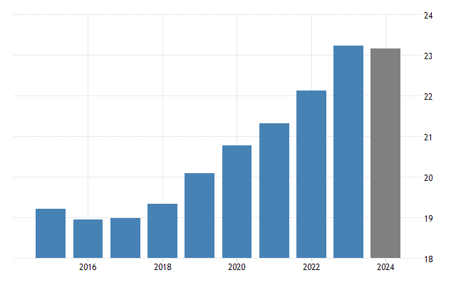

<!DOCTYPE html>
<html lang="en">
<head>
  <meta charset="UTF-8">
  <meta name="viewport" content="width=device-width, initial-scale=1.0">
  <title>Şehrim</title>

 
  <link rel="icon" href="../assets/img/pngwing.com.png" type="image/x-icon">

  <link rel="stylesheet" href="../assets/css/style.css">
  <link rel="stylesheet" href="../assets/css/bootstrap.min.css">
  
</head>

</html>
  <body>
    <div class="dropdown position-fixed bottom-0 end-0 mb-3 me-3 bd-mode-toggle">
      <button class="btn btn-secondary py-2 dropdown-toggle d-flex align-items-center"
        id="bd-theme"
        type="button"
        aria-expanded="false"
        data-bs-toggle="dropdown"
        aria-label="Toggle theme (auto)">
        <svg class="bi my-1 theme-icon-active" aria-hidden="true"><use href="#circle-half"></use></svg>
        <span class="visually-hidden" id="bd-theme-text">Toggle theme</span>
      </button>
    
      <ul class="dropdown-menu dropdown-menu-end shadow" aria-labelledby="bd-theme-text">
        <li>
          <button type="button" class="dropdown-item d-flex align-items-center" data-bs-theme-value="light" aria-pressed="false">
            <svg class="bi me-2 opacity-50" aria-hidden="true"><use href="#sun-fill"></use></svg>
            Light
            <svg class="bi ms-auto d-none" aria-hidden="true"><use href="#check2"></use></svg>
          </button>
        </li>
        <li>
          <button type="button" class="dropdown-item d-flex align-items-center" data-bs-theme-value="dark" aria-pressed="false">
            <svg class="bi me-2 opacity-50" aria-hidden="true"><use href="#moon-stars-fill"></use></svg>
            Dark
            <svg class="bi ms-auto d-none" aria-hidden="true"><use href="#check2"></use></svg>
          </button>
        </li>
        <li>
          <button type="button" class="dropdown-item d-flex align-items-center active" data-bs-theme-value="auto" aria-pressed="true">
            <svg class="bi me-2 opacity-50" aria-hidden="true"><use href="#circle-half"></use></svg>
            Auto
            <svg class="bi ms-auto d-none" aria-hidden="true"><use href="#check2"></use></svg>
          </button>
        </li>
      </ul>
    </div>
    
    <!-- SVG Icons -->
    <svg xmlns="http://www.w3.org/2000/svg" style="display: none;">
      <symbol id="sun-fill" viewBox="0 0 16 16" fill="currentColor">
        <path d="M8 4.5a3.5 3.5 0 1 0 0 7a3.5 3.5 0 0 0 0-7zM8 1a.5.5 0 0 1 .5.5v1.527a.5.5 0 0 1-1 0V1.5A.5.5 0 0 1 8 1zM4.05 2.05a.5.5 0 0 1 .707 0l1.074 1.074a.5.5 0 1 1-.707.707L4.05 2.757a.5.5 0 0 1 0-.707zM1 8a.5.5 0 0 1 .5-.5h1.527a.5.5 0 0 1 0 1H1.5A.5.5 0 0 1 1 8zM4.05 13.95a.5.5 0 0 1 0-.707l1.074-1.074a.5.5 0 1 1 .707.707l-1.074 1.074a.5.5 0 0 1-.707 0zM8 15a.5.5 0 0 1-.5-.5v-1.527a.5.5 0 0 1 1 0V14.5a.5.5 0 0 1-.5.5zM13.95 13.95a.5.5 0 0 1-.707 0l-1.074-1.074a.5.5 0 1 1 .707-.707l1.074 1.074a.5.5 0 0 1 0 .707zM15 8a.5.5 0 0 1-.5.5h-1.527a.5.5 0 0 1 0-1H14.5a.5.5 0 0 1 .5.5z"/>
      </symbol>
    
      <symbol id="moon-stars-fill" viewBox="0 0 16 16" fill="currentColor">
        <path d="M6 0a.5.5 0 0 0-.5.5v1.57a.5.5 0 1 0 1 0V.5A.5.5 0 0 0 6 0zM9.354 1.146a.5.5 0 1 0-.708.708L9.793 3H8.5a.5.5 0 0 0 0 1H10a.5.5 0 0 0 .354-.854L9.354 1.146z"/>
        <path d="M6 2a6 6 0 1 0 4.472 10.472 5.999 5.999 0 0 1-4.472-10.472z"/>
      </symbol>
    
      <symbol id="circle-half" viewBox="0 0 16 16" fill="currentColor">
        <path d="M8 15A7 7 0 1 1 8 1v14z"/>
      </symbol>
    
      <symbol id="check2" viewBox="0 0 16 16" fill="currentColor">
        <path d="M13.854 3.646a.5.5 0 0 1 0 .708L6.707 11.5 3.5 8.293a.5.5 0 0 1 .707-.707L6.707 10.086l6.44-6.44a.5.5 0 0 1 .707 0z"/>
      </symbol>
    </svg>
        <nav class="navbar navbar-expand-lg mb-5 bg-body-tertiary rounded"  aria-label="Thirteenth navbar example">
          <div class="container-fluid">
            <a class="navbar-brand text-primary text-decoration-none fw-bold fs-5 zoom-on-hover" href="../home.html">Abdulhadi Krımesh</a>
            <button class="navbar-toggler zoom-on-hover" type="button" data-bs-toggle="collapse" data-bs-target="#navbarsExample11" aria-controls="navbarsExample11" aria-expanded="true" aria-label="Toggle navigation">
              <span class="navbar-toggler-icon"></span>
            </button>
    
            <div class="collapse navbar-collapse d-lg-flex" id="navbarsExample11">
              
              <ul class="navbar-nav col-10  justify-content-lg-center">
                <li class="nav-item">
                  <a class="nav-link active zoom-on-hover mx-3" aria-current="page" href="../Home.html">Hakkımda</a>
                </li>
                <li class="nav-item">
                  <a class="nav-link active zoom-on-hover mx-3" aria-current="page" href="sehrim.html">Şehrim</a>
                </li>
                <li class="nav-item">
                  <a class="nav-link active zoom-on-hover mx-3" aria-current="page" href="mirasimiz.html">Mirasımız</a>
                </li>
                <li class="nav-item dropdown">
                  <a class="nav-link dropdown-toggle zoom-on-hover mx-3" href="#" data-bs-toggle="dropdown" aria-expanded="false">Bilgilerim</a>
                  <ul class="dropdown-menu">
                    <li><a class="dropdown-item zoom-on-hover " href="cv.html">öz geçmiş</a></li>
                    <li><a class="dropdown-item zoom-on-hover " href="ilgialanlarim.html">İlgi Alanlarım</a></li>
                    <li><a class="dropdown-item zoom-on-hover " href="iletisim.html">İletişim</a></li>
                  </ul>
                </li>
              </ul>
              <div class="d-lg-flex col-2 justify-content-lg-end mr-0">
                <button class="btn btn-primary zoom-on-hover" id="gobutton">Log in</button>
              </div>
            </div>
          </div>
        </nav>

        <div class="text-center">
          <h1><strong >Suriye</strong></h1>
        </div>
    
        <div id="carouselExampleCaptions" class="carousel slide container">
  <div class="carousel-indicators">
    <button type="button" data-bs-target="#carouselExampleCaptions" data-bs-slide-to="0" class="active" aria-current="true" aria-label="Slide 1"></button>
    <button type="button" data-bs-target="#carouselExampleCaptions" data-bs-slide-to="1" aria-label="Slide 2"></button>
    <button type="button" data-bs-target="#carouselExampleCaptions" data-bs-slide-to="2" aria-label="Slide 3"></button>
    <button type="button" data-bs-target="#carouselExampleCaptions" data-bs-slide-to="3" aria-label="Slide 4"></button>
    <button type="button" data-bs-target="#carouselExampleCaptions" data-bs-slide-to="4" aria-label="Slide 5"></button>
  </div>
  <div class="carousel-inner">
    <div class="carousel-item active">
      
      <div class="carousel-caption d-none d-md-block">
        <h5><a href="https://tr.wikipedia.org/wiki/Halep_Kalesi#">Halep kalesi</a></h5>
        
      </div>
    </div>
    <div class="carousel-item">
      
      <div class="carousel-caption d-none d-md-block">
        <h5><a href="https://tr.wikipedia.org/wiki/Emev%C3%AE_Camii#">Emevi camii</a></h5>
      </div>
    </div>
    <div class="carousel-item">
      
      <div class="carousel-caption d-none d-md-block">
        <h5><a href="https://tr.wikipedia.org/wiki/Palmira#">Palmira</a></h5>
       
      </div>
    </div>
    <div class="carousel-item">
      
      <div class="carousel-caption d-none d-md-block">
        <h5><a href="https://en.wikipedia.org/wiki/Roman_Theatre_at_Bosra#">Roman Tiyatro</a></h5> 
      </div>
      
  </div>
  <div class="carousel-item">
      
      <div class="carousel-caption d-none d-md-block">
        <h5><a href="http://tr.wikipedia.org/wiki/Hamidiye_%C3%87ar%C5%9F%C4%B1s%C4%B1_(%C5%9Eam)#">Hamidiye çarşısı</a></h5>
      </div>
    </div>
  <button class="carousel-control-prev" type="button" data-bs-target="#carouselExampleCaptions" data-bs-slide="prev">
    <span class="carousel-control-prev-icon" aria-hidden="true"></span>
    <span class="visually-hidden">Previous</span>
  </button>
  <button class="carousel-control-next" type="button" data-bs-target="#carouselExampleCaptions" data-bs-slide="next">
    <span class="carousel-control-next-icon" aria-hidden="true"></span>
    <span class="visually-hidden">Next</span>
  </button>
</div>
</div>


<section class="container my-5">
  <div class="row">
    <div class="col-md-6">
      <h2 class="text-danger mb-3">Suriye'nin Tarihi</h2>
      <p>
        Suriye, dünyanın en eski yerleşim alanlarından biridir. Mezopotamya ve Levant bölgesinde yer alır. 
        Tarih boyunca Babil, Asur, Roma, Bizans ve Osmanlı gibi pek çok uygarlığın kontrolü altında kalmıştır.
        Özellikle Şam, dünyanın en eski sürekli yerleşim yerlerinden biridir.
      </p>
    </div>
    <div class="col-md-6">
      

    </div>
  </div>
</section>

<!-- Nüfus ve yoğunluk -->
<section class="container my-5 bg-body-tertiary p-4 rounded">
  <h2 class="text-primary mb-3">Nüfus ve Yoğunluk</h2>
  <p>
    2024 verilerine göre Suriye'nin nüfusu yaklaşık 18 milyon civarındadır. En yoğun nüfuslu şehirler Şam, Halep ve Humus’tur.
    Ülkede savaş öncesi nüfusun büyük bölümü şehirlerde yaşarken, savaş sonrası birçok insan iç göç ve dış göçle yer değiştirmiştir.
  </p>
  <ul>
    <li>Toplam nüfus: Yaklaşık 18 milyon</li>
    <li>Yüzölçümü: 185.180 km²</li>
    <li>Nüfus yoğunluğu: ~97 kişi/km²</li>
  </ul>
  
  <p class="text-muted text-center mt-2">↑ nüfusa dair grafik .</p>
</section>


<section class="container my-5">
  <h2 class="text-success mb-3">Kültürel Miras: Yemekler ve Halk Dansları</h2>
  <div class="row">
    <div class="col-md-6">
      <h4>Ünlü Yemekler</h4>
      <ul>
        <li>Kibbeh (İçli köfte)</li>
        <li>Tabbouleh (Maydanoz salatası)</li>
        <li>Fattoush (Kızarmış ekmekli salata)</li>
        <li>Shawarma (Şavurma)</li>
        <li>Hummus ve Falafel</li>
      </ul>
    </div>
    <div class="col-md-6">
      <h4>Halk Dansları</h4>
      <p>En meşhur halk dansı <strong>Dabke</strong>'dir. Düğünlerde, bayramlarda toplu halde yapılan bu dans büyük bir kültürel mirastır.</p>
    </div>
  </div>

  <div class="text-center mt-4">
    
    
    <p class="text-muted mt-2">↑ Yemek ve halk dansları için örnek görseller.</p>

    <!-- Genel açıklama metni -->
    <p class="mt-4">
      Suriye'nin kültürel mirası, geçmişten günümüze taşınan değerler, gelenekler ve yaşam biçimlerinin bütününü kapsar.
      Daha fazlasını keşfetmek için aşağıdaki sayfayı ziyaret edebilirsiniz.
    </p>

    <!-- Yönlendirme butonu -->
    <a href="mirasimiz.html" class="btn btn-outline-success mt-2">Mirasımız Sayfasına Git</a>
  </div>
</section>


<section class="container my-5 bg-body-tertiary p-4 rounded">
  <h2 class="text-info mb-3">Suriye'nin Doğal Kaynakları</h2>
  <p>
    Suriye, zengin doğal kaynaklara sahip bir ülkedir. Başlıca doğal kaynaklar arasında:
  </p>
  <ul>
    <li>Petrol ve Doğal Gaz</li>
    <li>Fosfat (gübre yapımında kullanılır)</li>
    <li>Zeytin, buğday ve pamuk üretimi</li>
    <li>Bakır, krom gibi yer altı madenleri</li>
  </ul>
  
  <p class="text-muted text-center mt-2 ">↑ Kaynaklara dair harita.</p>
</section>


<section class="container my-5">
  <h2 class="text-danger mb-4">Suriye Devrimi: 2011'den Zafere</h2>


  <div class="row align-items-center mb-5">
    <div class="col-md-6">
      
    </div>
    <div class="col-md-6">
      <h3 class="text-warning">Devrimin Başlangıcı (2011)</h3>
      <p>
        2011 yılında Dera kentinde bazı çocukların duvarlara rejim karşıtı sloganlar yazmasının ardından tutuklanıp işkence görmesi,
        halkın öfkesini alevlendirdi. Binlerce kişi sokaklara çıkarak <strong>özgürlük, onur ve adalet</strong> talep etti.
        Gösteriler hızla Şam, Halep, Hama, Humus gibi diğer şehirlere yayıldı.
      </p>
      <p>
        Rejim, barışçıl protestolara ağır şiddetle yanıt verdi. Bu baskılar sonucunda, halkın direnişi silahlı çatışmalara dönüştü ve
        ülke iç savaşın içine sürüklendi.
      </p>
    </div>
  </div>


  <div class="row align-items-center flex-md-row-reverse">
    <div class="col-md-6">
      
    </div>
    <div class="col-md-6">
      <h3 class="text-success">Zaferin Gelişi (2024)</h3>
      <p>
        Yıllar süren mücadelenin ardından, 2024 Aralık ayında <strong>Bashar Esad rejimi tamamen yıkıldı</strong>.
        Halep'ten başlayan muhalif ilerleyiş, Humus ve Şam'da devam etti ve sonunda halk Esad sarayına girmeyi başardı.
        Esad, Rusya'ya kaçarak iltica talebinde bulundu.
      </p>
      <p>
        Bu zafer, sadece bir rejimin devrilmesi değil, aynı zamanda halkın umutlarının, sabrının ve adalet özleminin bir sonucuydu.
        Suriye artık yeni bir döneme, özgürlük ve yeniden yapılanma sürecine girmiş oldu.
      </p>
    </div>
  </div>


  <div class="text-center mt-5">
    
    <p class="text-muted">↑ Zafer sonrası kutlamalardan bir sahne</p>
  </div>
</section>


<br><br><br><br><br><br><br><br><br>
<footer class="text-center py-4 border-top">
          <p class="mb-0 text-muted">© 2025 Abdulhadi KRIMESH - Sakarya üniversitesi</p>
      </footer>
    <script src="../assets/js/main.js"></script>
    <script src="../assets/js/login.js"></script>
    <script src="../assets/js/bootstrap.bundle.min.js"></script>
  </body>
</html>
    